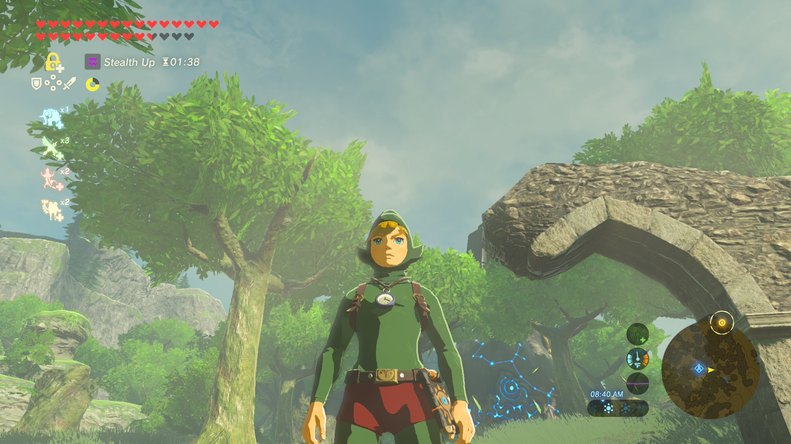
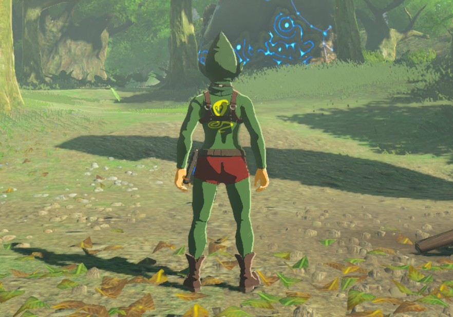
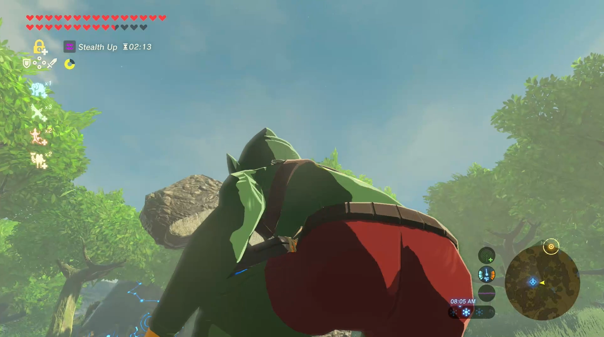

In 2017 The Legend Of Zelda Breath Of The Wild was released. A game full of freedom and things to do around Hyrule. One of the things that you can do in botw (Breath of the Wild.) it's cooking! You can cook almost anything you can get your hands on. There are tons of recipes in this game, but today, I brought you three of my favorite recipes, and that I think don't often get the recognition they deserve.
But before we go into the recipes, fit-check by Link:


